The Challenge
From creating a poll on Instagram to dropping in your ballot, the ability to vote comes with great responsibility (and can be a lot of fun). Use this guide to create a voting app that empowers others to exercise their voices, share their opinions, and display results. We’re so excited to see what you come up with!
Click "Connect Your App" below to start building your app!
Connect Your App
Opinion Poll App Tutorial
(Level: Intermediate)
Introduction
In this project you will create a simple polling app that will allow users to express their opinions on a topic and the results will be collected via the Cloud. In the process you will also catch a glimpse of how to represent, process and visualize data in the MIT App Inventor coding environment.
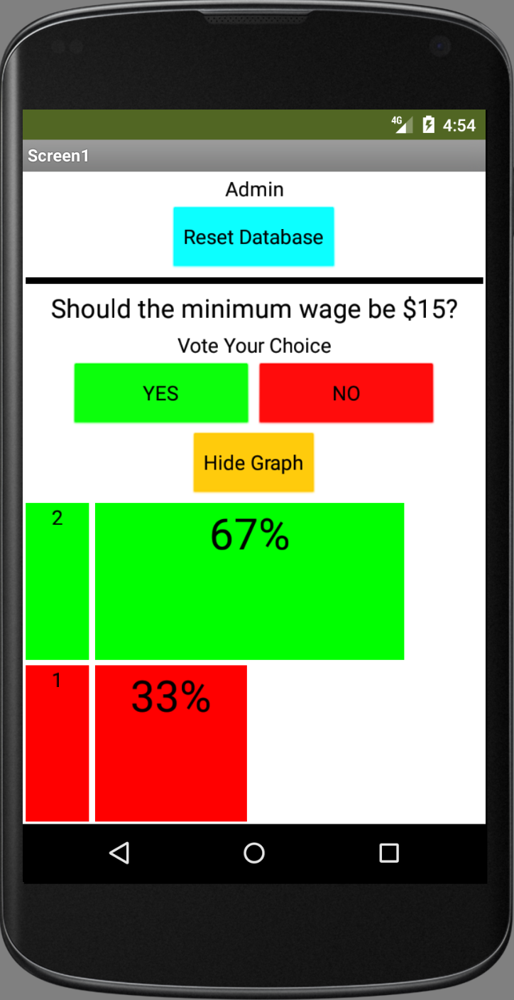You can click on the images to enlarge them and click and drag the top frame of the enlarged images to move them around as needed.
The User Interface
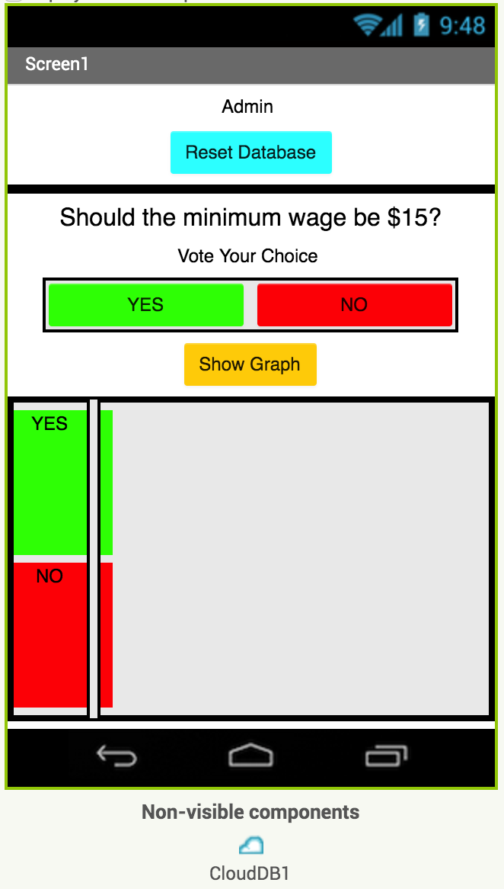Above you can see the user interface (UI). There is a section in the upper part of the screen that allows the poll administrators to reset the Cloud database where data will be collected. The rest of the UI is dedicated to non-admin users (voters) who will be taking the poll. There is a label where a Yes/No poll question will be displayed. There are two buttons (Yes/No) where the voters can indicate their choice. The graph will be hidden from the voters until they have cast their vote but once a vote has been cast, they can view the graph that is dynamically updated as other voters also cast their votes. The exact number of Yes/No votes will be displayed and their relative percentages will be shown in the form of horizontal bar graphs.
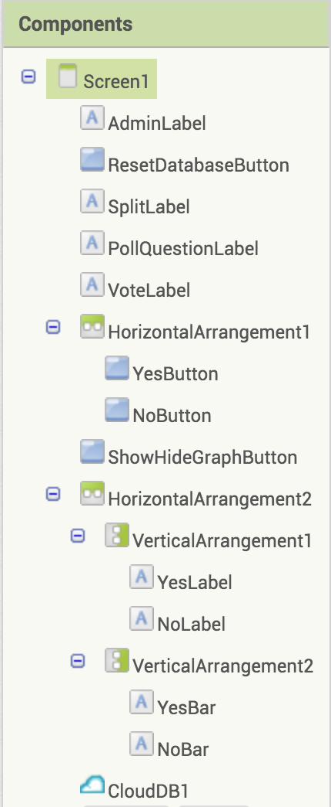Study the UI and the component hierarchy which has already been created for you. Feel free to change the look and feel of the interface (such as button shapes and colors); however do not change the names of the components because in the coding part of the tutorial there will be references made to these names.
The User Interface
Here is another look showing the correspondence between the UI and the components hierarchy.
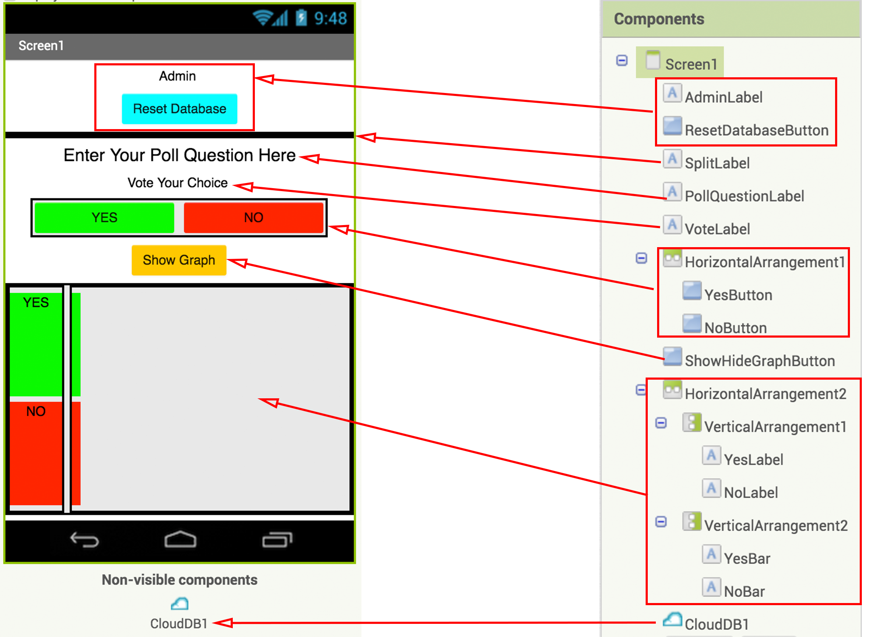Test the UI
This may be a good time to test your app on the AI Companion or the Emulator (via the Connect menu) to make sure your layout fits well and looks good when running on an actual device. If you need help please refer to to the "Connect your App" tab above. Please note that some components, like the graphs, may not be visible yet due to their default settings.

Introduction to CloudDB
For this project you will use CloudDB as your database to store the Yes/No votes entered by the users of your app. This non-visible component can be found in the Storage tab of the Palette. This component has already been added to the user interface (UI) for you but in another project you would just need to grab and drop the CloudDB component on your Screen1 to add it to your app's Components.

Introduction to CloudDB
You may have previously used the TinyDB component, which stores data locally on the user's mobile phone or tablet. TinyDB can only be accessed by one user on a single device. On the other hand CloudDB allows multiple users to store, access and modify data in the Cloud.
Here are some of the blocks in the CloudDB drawer.
The following block allows you to store a value in CloudDB using a unique tag, very much like how you would assign a value to a uniquely named variable. One important difference to note however is that while a variable can hold a value only until the app quits, a value stored in the CloudDB will be available to the user each time the app is run until the value is erased or changed.
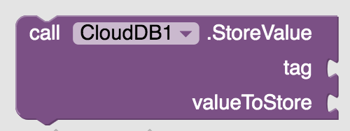The following block is similar to the block above; however, this block allows you to add a value at the end of a list stored in CloudDB under a unique tag.
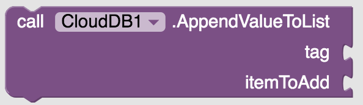The following block allows you to retrieve a value stored in CloudDB using its tag. If there is no such tag, you can choose to return some other value like the empty string or the empty list.
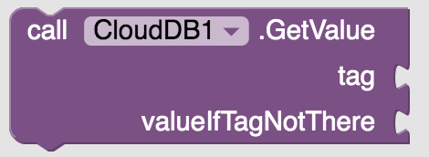Note that unlike the "get" call made to TinyDB, which returns a value (almost) instantaneously, the "get" call to CloudDB is a request made to the database and does not return a value instantaneously. When the database finally retrieves the desired value stored under the given tag, it triggers a GotValue event.

One of the most important blocks in the CloudDB drawer is the following block. When data is changed in the Cloud database, CloudDB informs all the users of the app of this change so that changes can be made on local devices as needed.
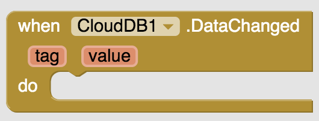The following block allows you to erase a tag and its current value.
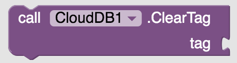Introduction to CloudDB
You will use the CloudDB as a database to collect and store the votes cast in the cloud. You will create two tags in the CloudDB, "YesVotes" and "NoVotes", and under each tag you will store a list of "Yes" and "No" votes cast by the polling app users. The length of each list at any moment will give you the total count of Yes and No votes cast up until that time. Below you can see a depiction of the CloudDB at an instant in the voting and the corresponding UI at that moment.
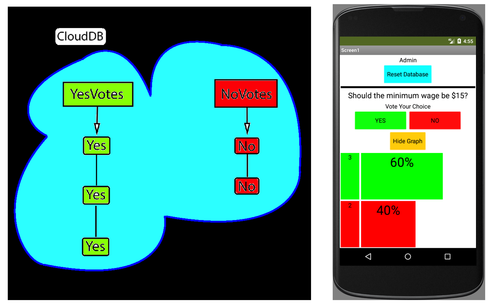Blocks Editor
Now you will give functionality to the user interface (UI). Switch to the Blocks editor.

Initializations

You will need to keep track of various variables in this project. yesCount and noCount will keep track of the number of Yes and No votes cast by those who are polled. yesPercentage and noPercentage variables will keep track of the relative percentages of the Yes and No votes cast. Initialize these variables to zero.
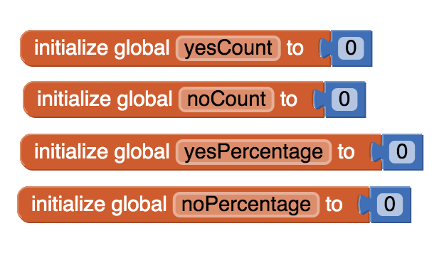Initializations
As you will need to initialize many variables and many components several times (such as when the poll administrator presses the Reset Database button), you will create a procedure to modularize this initialization process. To do so, go to the Procedures drawer in the Built-in Blocks panel and edit the default name of the procedure block to "initialize".
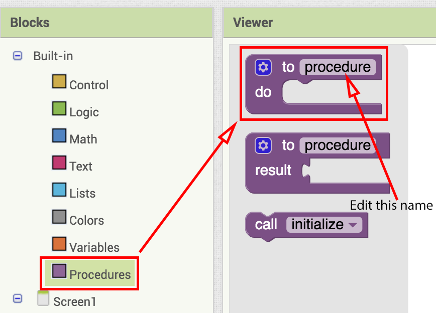Initializations
Define the initialize procedure to:
- set the PollQuestionLabel to a Yes/No poll question you would like. For example, "Should the minimum wage increase to $15?"
- enable the Yes and No buttons;
- set the ShowHideGraphButton text to "Show Graph";
- disable the ShowHideGraphButton (until the user casts a vote);
- hide the HorizontalArrangement2 containing the bar graphs;
- initialize the variables yesCount, noCount, yesPercentage, noPercentage all to zero;
- set the YesBar and NoBar width percentages to zero;
- set the YesLabel and NoLabel texts to zero.
Do this coding on your own. Click on the button below to check your solution.
Collapsing Code Blocks
In this project you will do quite a bit of coding and you may benefit from "collapsing" long blocks of code in order to have more work space and to better organize your code, as shown below.
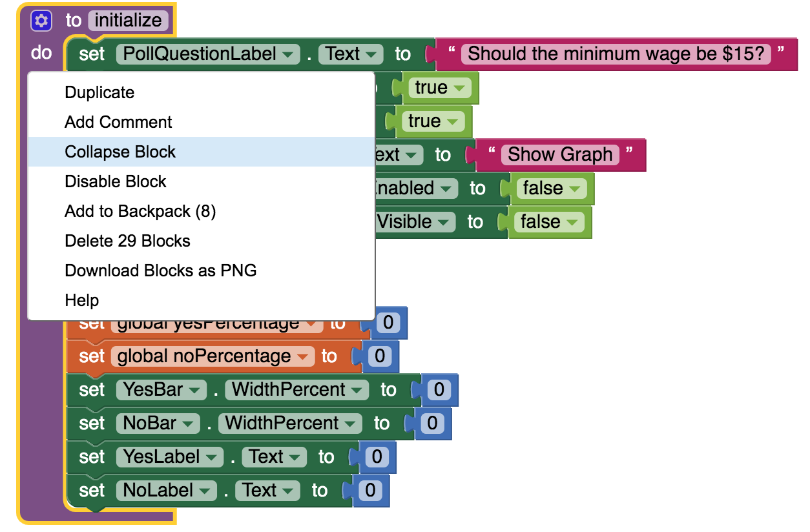Screen1 Initialization
When Screen1 initializes:
- call the initialize procedure;
- make a GetValue request to CloudDB for the tag "YesVotes" to get the existing count of "Yes" votes already cast by other voters;
- make a GetValue request to CloudDB for the tag "NoVotes" to get the existing count of "No" votes already cast by other voters;.
CloudDB GotValue Event
When CloudDB responds to the "get" request with a GotValue event:
- if the tag is "YesVotes" set yesCount to the length of the list returned in the value parameter.
- else if the tag is "NoVotes" set noCount to the length of the list returned in the value parameter.
Yes and No Buttons
Now code the Yes and No buttons. When the YesButton is clicked:
- disable the Yes and No buttons so that the voter cannot cast more than one vote. (During the testing phase of your app, it is best, however, to leave the Enabled property of these buttons set to true so that using a single mobile phone/tablet you can cast many votes and see the graphs update.)
- enable the ShowHideGraphButton so that after casting a vote the voter can choose to see the polling results update in graphs.
- make a call to CloudDB to append a "Yes" to the list stored under the tag "YesVotes".
Do this coding on your own. If you get stuck and would like some hints, click on the hint button below.
Important: This is a good place to test your app's Yes Button before going any further.
Yes and No Buttons
The No button process is similar. When the NoButton is clicked:
- disable the Yes and No buttons so that the voter cannot cast more than one vote. (During the testing phase of your app, it is best, however, to leave the Enabled property of these buttons set to true so that using a single mobile phone/tablet you can cast many votes and see the graphs update.)
- enable the ShowHideGraphButton so that after casting a vote the voter can choose to see the polling results update in graphs.
- make a call to CloudDB to append a "No" to the list stored under the tag "NoVotes".
Do this coding on your own. If you get stuck and would like some hints, click on the hint button below.
Important: This is a good place to test your app's No Button before going any further.
Yes and No Buttons
When you are testing your app, you want to be able to press the Yes and No buttons multiple times to make sure that the vote counts and graphs update appropriately, so leave the Enabled property of these buttons set to true while testing. Don't forget to change these to false after you're done testing and are ready to publish your app. That way, each voter will only be able to cast a single vote, as the voting buttons will be disabled once they vote.
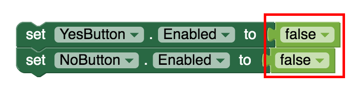Show and Hide Graph Button
Now you will give functionality to the ShowHideGraphButton. When this button is clicked:
- if the HorizontalArrangement2 which contains the graphs is currently visible:
- make the HorizontalArrangement2 invisible;
- make the ShowHideGraphButton text "Show Graph";
- otherwise
- make the HorizontalArrangement2 visible;
- make the ShowHideGraphButton text "Hide Graph".
Do this coding on your own. If you get stuck and would like some hints, click on the hint button below.
Important: This is a good place to test your app's Show and Hide Graph Button before going any further.
Visual Display of Graphs
Here are some screenshots that show how the visual display of data, in the form of horizontal bar graphs, changes as votes are cast. Study these screenshots so you get a feel for the graphical displays you will be creating. Note that the leftmost bases of these graphs are used to display the actual number of Yes/No votes that are cast while the horizontal bar graphs display the relative percentage of the Yes/No votes.

Data Changed in CloudDB
When the users of the polling app cast their votes, the information is sent to the CloudDB (see your code above when YesButton, NoButton are clicked). As soon as the database has changed, the CloudDB will need to inform all users of the app to update the information on the local devices and update the graphs etc. Here is a sequence of events which needs to happen when CloudDB data has changed:
- If the value returned by CloudDB is an empty list (which means that the CloudDB is responding to a database reset initiated by the poll administrator) then call initialize procedure to reset everything.
- otherwise,
Continued on the next page.
Data Changed in CloudDB (continued)
Continued from the previous page
- otherwise,
- if the tag returned by CloudDB is "YesVotes" (indicating that a change in the database occurred with the Yes votes) then set the yesCount variable to the length of the list returned as the value. (Remember that the list under the tag "YesVotes" is made up of a series of "Yes" texts and the length of this list specifies the total number of Yes votes collected.)
- else if the returned tag was "NoVotes" (indicating that a change in the database occurred with the No votes) set the noCount variable to the length of the list returned as the value. (Remember that the list under the tag "NoVotes" is made up of a series of "No" texts and the length of this list specifies the total number of No votes collected.)
Continued on the next page.
Data Changed in CloudDB (continued)
Continued from the previous page
- set the yesPercentage and noPercentage variables to the proper calculations.
- set YesLabel and NoLabel to the yesCount and noCount respectively. These labels will report the exact number of Yes and No votes cast.
- set the WidthPercent parameter for the YesBar and NoBar components to the yesPercentage and noPercentage variables which you calculated above. This will ensure that the bar graphs will have correct width sizes.
- set the text of YesBar and NoBar components to display the proper percentages calculated above followed with the "%" symbol to indicate that these values are percentages.
Important: This is a good place to test your app before going any further.
Reset Database Button
When an administrator of the polling app clicks the ResetDatabaseButton:
- make a call to CloudDB to replace the list under the tag "YesVotes" with an empty list;
- make a call to CloudDB to replace the list under the tag "NoVotes" with an empty list;
- call the procedure initialize to reset everything.
Do this coding on your own. If you get stuck and would like some hints, click on the hint button below.
Build Your App
Because this app sends information to the cloud to be shared by multiple users, it is helpful to test it using at least two devices so you can check that each user is properly accessing the cloud and getting the data updates.
Go to the "Build" menu at the top of the screen and click on "App (provide QR code for .apk)". This will start the process of building the app so it can be installed on any tablet.

A QR code will appear in a pop-up window once the app is built. This may take a few minutes. When it appears, both you and your partner should scan it using your devices. Follow the prompts to download and install the .apk on your tablets.
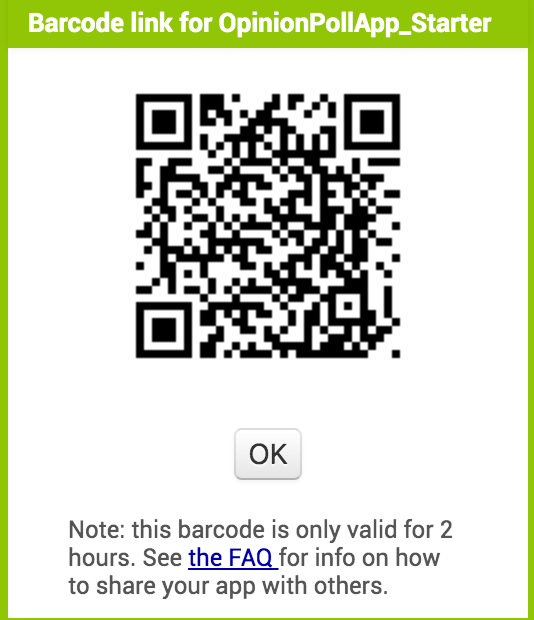After testing, if you need to make adjustments to your code, you will need to uninstall the old .apk file from each tablet and do a new build, repeating the above procedure.
Test your App!
You are done! Test your app thoroughly using multiple devices.
- make sure that you can cast Yes and No votes;
- make sure that you can view the graphs after casting a vote;
- make sure that the graphs dynamically update as more and more votes are cast;
- make sure that the graphs correctly display the relative percentages of the Yes and No votes cast;
- make sure that an admin can correctly reset the database and this change promptly leads to a reset in the user interface.
Expand Your App
- Make administrator access to Reset Database button be password protected so that arbitrary users cannot reset the database. (You may wish to look at another YR Media tutorial titled "My To Do List" to learn how to add password protection to your user interface.)
- Create an interface in the password protected administrator section so that the admin can write a poll question to be broadcast to all users of the app taking the poll via the CloudDB. This will allow the admin to generate and broadcast poll questions as needed instead of being limited to a single hard-coded poll question.
- Create a version where there are multiple choices to select from, for example A, B, C, D and thus more bar graphs to display. This version may be even more useful in a classroom setting for a teacher than the simple Yes/No version.
- Make a version of the project where the bar graphs are vertical rather than horizontal.
- Your own innovative ideas here.
Share Your App
About Youth Mobile Power
A lot of us spend all day on our phones, hooked on our favorite apps. We keep typing and swiping, even when we know the risks phones can pose to our attention, privacy, and even our safety. But the computers in our pockets also create untapped opportunities for young people to learn, connect and transform our communities.
That’s why MIT and YR Media teamed up to launch the Youth Mobile Power series. YR teens produce stories highlighting how young people use their phones in surprising and powerful ways. Meanwhile, the team at MIT is continually enhancing MIT App Inventor to make it possible for users like you to create apps like the ones featured in YR’s reporting.
Essentially: get inspired by the story, get busy making your own app!

The YR + MIT collaboration is supported in part by the National Science Foundation. This material is based upon work supported by the National Science Foundation under Grant No. (1614239). Any opinions, findings and conclusions or recommendations expressed in this material are those of the author(s) and do not necessarily reflect the views of the National Science Foundation.
Check out more apps and interactive news content created by YR here.